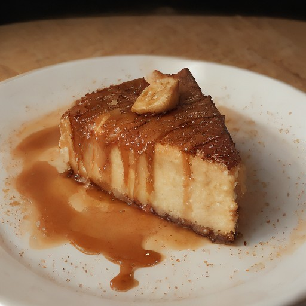

デザート
完熟バナナ×キャラメルブリュレの悪魔的チーズケーキ ～ 燃え尽きない甘酸っぱさとカリカリ食感の悪魔的スイーツ ～

完熟バナナの甘さを、キャラメルブリュレの香ばしさと、カリカリ食感のチーズケーキが融合！悪魔的な美味しさに、一口食べたらもう止められない！
💡 こんな時・こんな人におすすめ！
特別な日や、特別な人へプレゼントに最適！
📋 必要な材料（ポストイット風）
材料リスト 1
- 完熟バナナ3個
- キャラメル100g
- 生クリーム200ml
材料リスト 2
- チーズ100g
- バター5g
🍳 作り方ステップ
1
1. バナナを皮ごと、薄切りにして、キャラメルでコーティングします。
2
2. 生クリームとチーズを混ぜて、クリームチーズ状に練り上げます。
3
3. バナナとキャラメルがコーティングされたチーズケーキを、熱したオーブンで焼き上げます。
4
4. 最後に、キャラメルソースをかけたチーズケーキを、バターでコーティングして、完成に近づけます。